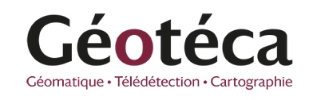
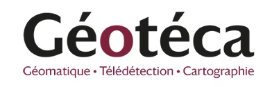

GEOUNIV’R 2024
Enseigner la statistique, la cartographie et l’analyse spatiale avec R
Institutions et financement
L’école d’été GEOUNIV’R 2024 a été organisée par la Fédération de Recherche CIST conjointement par le départements de géographie de la FLSH de Universié Sfax et l’UFR GHES de l’université Paris-Cité.
Le financement principal a été apporté par les crédits de l’IDEX Innovation Pédagogique de l’Université Paris-Cité
Le projet a été réalisé avec le soutien d’enseignants-chercheurs des laboratoires de recherche Géographie-cités et Prodig et d’ingénieurs des unités de service Riate Geoteca.

 

Objectif
L’ objectif de cette école d’été était de former des formateurs en réunissant des enseignants et ingénieurs français et tunisien intéressés par l’usage du logiciel R pour la cartographie, la géomatique, la statistique et l’analyse spatiale. Les enseignements ont été co-construits à partir de données et de questions d’enseignement et de recherche intéressant en premier lieu la Tunisie. Les formateurs français ont apporté leur expertise dans la résolution de ces questions à l’aide du programme R. Une partie des outils de formations avaient été préalablement développée lors de l’Ecole d’été CIST 2022-2023 qui avait réuni des enseignants chercheurs de France et d’Afrique de l’Ouest.

Lieu et date
L’école d’été GEONUIV’R 2024 s’est tenue à l’hôtel Sentido Bellevue de Sousse du 12 au 18 Mai 2024; L’hôtel Sentido Bellevue Park est dédié au toursime. Mais offre aussi des salles de réunions pour les congrès et meetings. Il a offert un tarif préférentiel à la formation ce dont nous le remercions.
Comité d’organisation
L’école d’été GEONUIV’R 2024 a été organisé conjointement par la FALSH de l’Université de Sfax, l’Université Paris Cité et la FR 2007 CIST avec le soutien des équipes de recherche SYFACTE, Géographie-cités, Prodig, Geoteca et Riate. Le comité d’organisation était composé de Claude Grasland et Salem Dahech pour l’Université Paris Cité, Riadh Bouaziz et Sami Charfi pour l’Université de Sfax.

Participants
L’école d’été a rassemblé 34 participants parmi lesquels 9 enseignants-chercheurs ou ingénieurs côté français et 25 enseignants-chercheurs côté tunisien, appartenant aux différents départements de géographie en Tunisie (Sfax, Sousse, Tunis, Manouba et Jendouba).

France
- Baudet-Michel Sophie France
- Dahech Salem France
- Grasland Claude France
- Guérois Marianne France
- Lambert Nicolas France
- Madelin Malika France
- Marveaux Elina France
- Plaisant Brian France
- Ysebaert Ronan France
Tunisie
- Bouaziz Riadh Tunisie
- Charfi Sami Tunisie
- Feki Mohamed Tunisie
- Yengui Taher Tunisie
- Kacem Abir Tunisie
- Souissi Mohamed Tunisie
- Hammami Zayed Tunisie
- Nsiri Hsan Tunisie
- Jarraya Mounir Tunisie
- Ghribi Marwen Tunisie
- Rebei Hédi Tunisie
- Zenati Hedi Tunisie
- Hamza Dalel Tunisie
- Barrani Yassine Tunisie
- Ben Fguira Sami Tunisie
- Hamila Hajer Tunisie
- Heni Sabeh Tunisie
- Madani Wassim Tunisie
- Saadaoui Khaoula Tunisie
- Soudeni Sghaira Tunisie
- Euchi Hamdi Tunisie
- Ben Romdhan Safa Tunisie
- Nasrallah Wafa Tunisie
- Abdelkhalak Abderrahmen Tunisie
- Chkir Ben Jmâa Najiba Tunisie